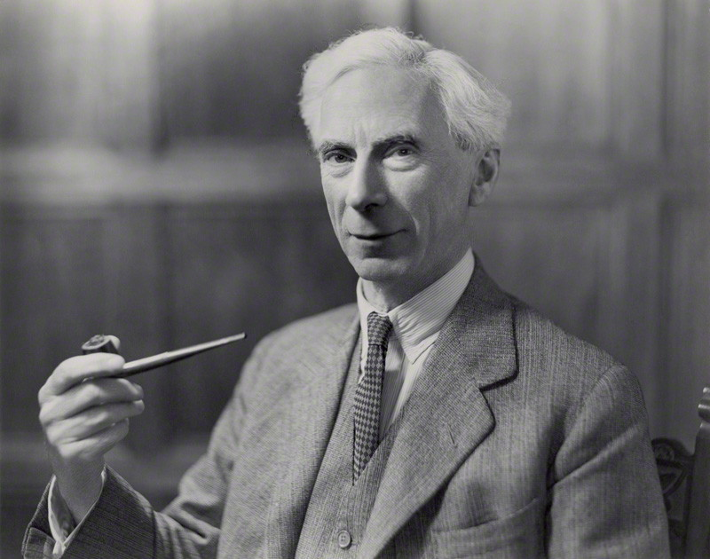

Published: 12.9.2025
ü¶∏ü躂Äç‚ôÄÔ∏è People that have inspired me

This is a statue of Jean Jaques Rousseau. A philosopher that has been regarded as quite controversial, but I think his ideas are worth listening to. In short: he was critical to parts of the changes that were a consequence of the Enlightment, especially the idea that reason and society always leads to progress. I have taken this picture on vacation in Paris.

This is Bertrand Russell. Another philosopher. He is a hero of mine. He was a mathematician. Wrote one of the definitite works on maths, but then went on to become a philosopher. I admire that. He was not very fond of Rousseau though. And lately I have started to think that that says something about him, but also the state of our rational sensemaking of the world. I have borrowed the photo of him from here
{kind=link}

This is Achille Mbembe, an African philosopher. Shivers went down my spine when I read his book Necroplitics, really discribing the western system, and with the state of the world, also how the world is governed. The system is upheld by violence, either directly, or indirectly is Mbembes thesis. Not surpricingly Palestine is mentioned in the book. Photo borrowed from here
{kind=link}

This is the Spanish philosopher Marina Garcés. I think her call for a radical new Enlightment is a clarion call for all of us. We know more about the relationship between knowledge and power, than we do about the relationship between knowledge and liberty is one of her five hypotheses. All her hypotheses are worth dwelling upon in my opinion. Photo taken from here
{kind=link}